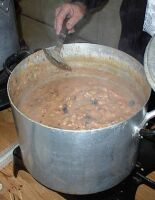

|
 |
 |
 |
 |  |
 |
 |
| un vaissé | a vessel |
| la vaisselle | crockery |
| la vaisselle d'argent | silver plate |
| la vaisselle dé porcélaine | china |
| la vaisselle d'êtain | pewterware |
| la vaissell'lie | pots and pans |
| la tèrr'rie | earthenware |
| eune bolle | a bowl |
| eune boutelle | a bottle |
| eune bûsette | an earthware bottle |
| eune canne à lait | a milk jug |
| eune canne à traithe | a milking can |
| eune canne | a jug |
| eune cannetinne | a canteen |
| eune cannette | a wooden cider jug |
| eune chaûdgiéthe | a large cooking pot, a cauldron |
| eune coupe | a cup, a chalice |
| eune cruche | a jug |
| eune dgougue | a jug |
| eune êtchuelle | a wooden bowl |
| eune houlette | a small pot |
| eune jarre à picl'yes | a pickling jar |
| eune jarre à rhonme | a rumpot |
| eune jarre | a jug |
| eune jûte | a pewter measuring jug |
| eune lachefraie | baking dish, cassereole dish |
| eune peîle | a large preserving pan |
| eune tâsse | a cup |
| eune tèrrinne à beurre | a butter pot |
| eune tèrrinne | a pot |
| eune tinne | a tin |
| eune toube | a tub |
| la pot'tie | pottery |
| un bachîn | a “bachîn”, a preserving pan |
| un bro | a pitcher |
| un caûdron | a cauldron |
| un chanmeau | a casserole dish |
| un cruchon | a small jug |
| un dgichon | a bowl |
| un godet | a mug |
| un godîn | a mug |
| un hana | a mug |
| un hanapé | a large mug |
| un houlot | a pot with handle and feet |
| un laitchi | a milk jug |
| un malzard | a pot |
| un mogue | a mug |
| un pangni | a basket |
| un pichet | a small jug |
| un pînton | a pint pot |
| un pot à flieurs | a flowerpot |
| un pot | a pot |
| un pot' à thée | a tea pot |
| un potîn | a small pot |
| un tchaûdron | a cauldron, a copper |
| un tèrrîn | an earthenware vessel |
| un vase | a vase |

Viyiz étout: